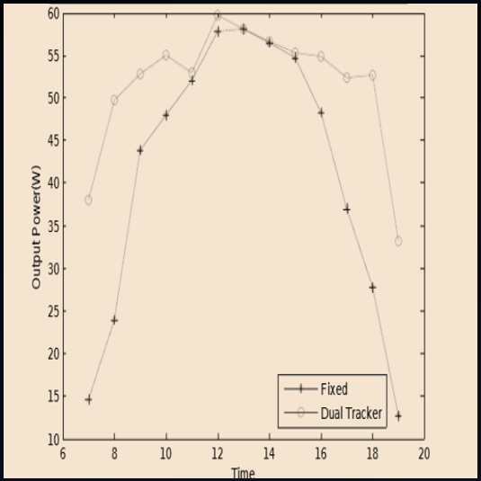

Smart Solar Panel
Introduction
As the world is growing the conventional sources of energy are reducing ,so we have to focus on non-conventional sources of energy. Sun is the biggest source for non-conventional energy and so solar panels are being used everywhere to sustain the current reserves and make energy more efficiently. A usual solar panel has an efficiency of around 17-19% whereas if we rotate the solar panel in the direction of sun , the efficiency can be increased to 30-40%.
Basic Idea
The basic idea behind this model is that maximum efficiency is obtained when the solar panel is placed perpendicular to the sun.So as the sun will rotate in it’s trajectory the panel will move with it giving maximum efficiency.
Circuit

Operational Procedure
When the sun rises the solar panel is fixed at a point. 4 LDRs are used to detect the intensity of light, as the intensity of light increases their resistance decreases. When the sun rotates in it’s trajectory the intensity of light changes at a specific place where our panel is kept. When the sun rotates, the intensity of light at a certain LDR will be higher or lower as compared to another LDR depending upon its location. The 4 LDRs are kept in a rhombus fashion. Suppose the LDRs are named A , B , C , D. If the sun is moving in the direction of C, then the intensity of light at C will be more than every other LDR placed over the panel.2 servo motors are being used to rotate the panel in both the direction .i.e from east to west and from east to west through south or north. Since for every equinox and solstice the earth rotates by an angle of 23.5 degrees, so to rotate our panel in other direction also we have to use 2 servo motors. The intensity of light at every LDR is constantly being recorded by the Arduino, so the Arduino will compare the intensities of the LDRs and will command the motors to move in the direction of the LDR having the maximum intensity of light. This way the panel will keep moving with sun maintaining an angle of 90 degrees with the it and hence giving maximum intensity. When it gets dark the panel will automatically return to it’s original position(the panel is coded as when the intensity of light decreases below a threshold value return the panel to it’s original state).
Table
| Voltage(V) | Current(A) | Power(W) |
|---|---|---|
| 5.12 | 1.21 | 6.1952 |
| 5.23 | 1.4 | 7.322 |
| 5.41 | 1.5 | 8.115 |
| 5.16 | 1.23 | 6.3468 |
Power Developed Graph

A graph for the power developed by static solar panel and dual axis solar tracker is shown, this is an expected graph which we will be obtaining.
From the graph it can be explicitly seen that power developed in case of smart solar tracker is more than in case of static solar panel.
Scope
Since India is a developing nation, the energy demands are a increasing at an enormous rate. So to meet these increasing demands, a smart solar panel is a great alternative to conventional sources of energy generation. This will help in creating green energy, thus minimizing pollution. Since the efficiency and output is more than the static one, it can also easily meet the demand of a small family and if every home has one or two smart solar panels placed on their houses roof it can be a big change.